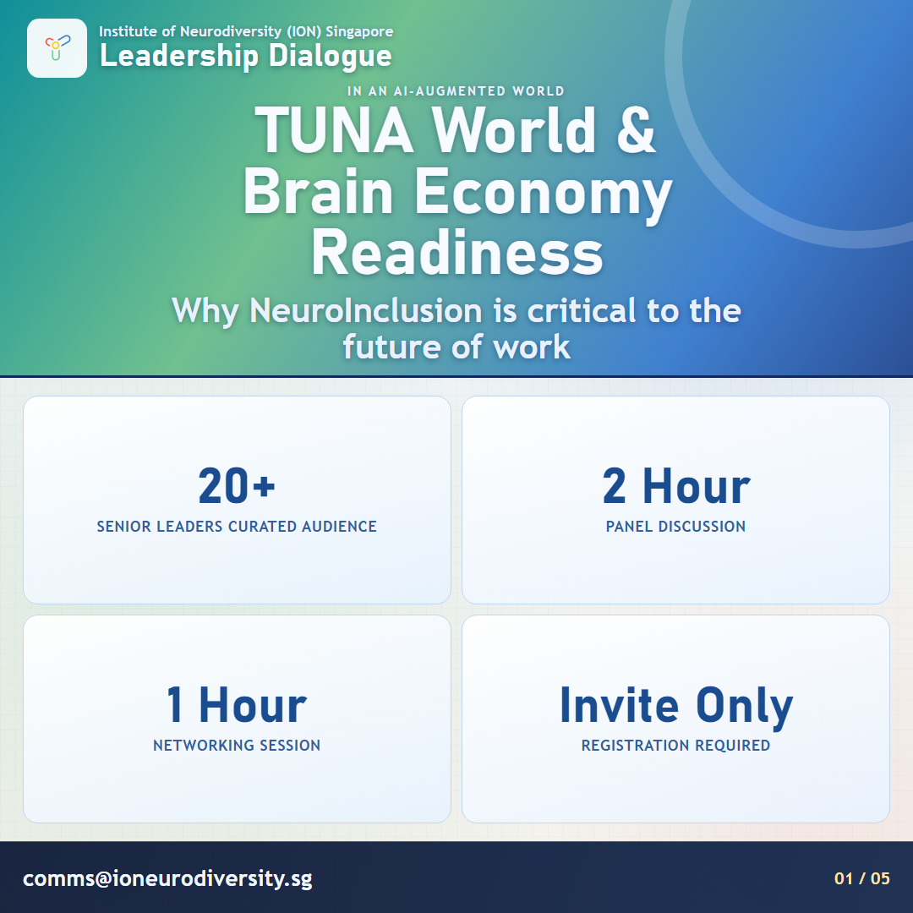

Education and Awareness
01
Experiential Workshop
A hands-on experience that helps participants develop a deeper understanding of neurodiverse challenges and strengths.
This workshop encourages empathy, self-reflection, and discussions on how to build a more inclusive environment
02
Certification Programs
Introduce a "Neurodiversity-Friendly" workplace and school certification to recognize institutions implementing inclusive practices.
This is in line with certifying neuro inclusive spaces in Singapore
03
Neurodiversity Awareness Campaign
Run an annual national awareness campaign in collaboration with mainstream media and digital platforms.